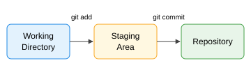

Mengenal Version Control dengan Git
Git membantu kita mencatat setiap perubahan kode sehingga riwayat pekerjaan dapat ditelusuri kembali.

Catatan belajar mahasiswa Informatika
Git membantu kita mencatat setiap perubahan kode sehingga riwayat pekerjaan dapat ditelusuri kembali.
